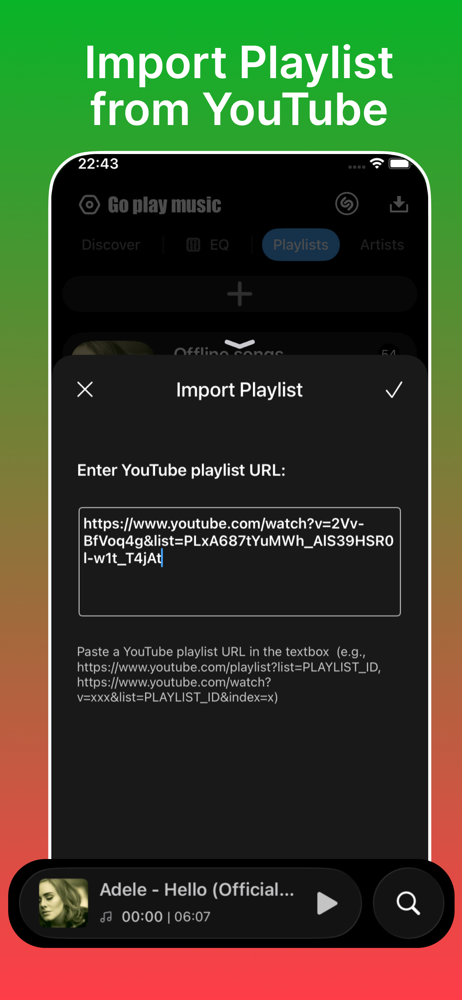
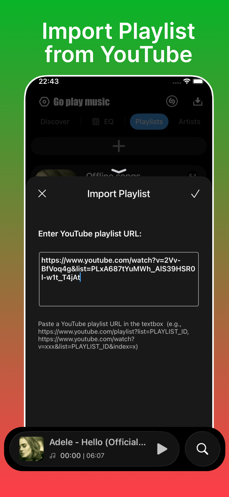
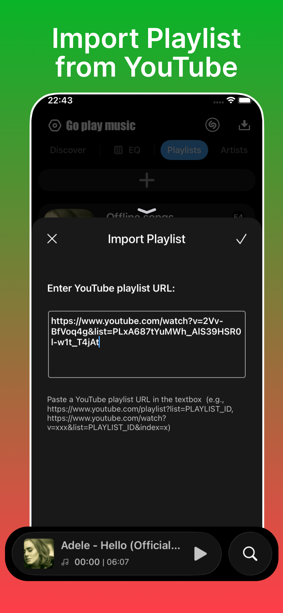

Go Play Music Future-Proof Your Listening.
The only music player with **Automatic Offline Caching**, **Max Volume Boost**, and the cutting-edge **iOS 26 Frosted Glass** design. Music freedom, perfected.
 



The only music player with **Automatic Offline Caching**, **Max Volume Boost**, and the cutting-edge **iOS 26 Frosted Glass** design. Music freedom, perfected.

From revolutionary caching to groundbreaking design, Go Play Music is built different. Tap any feature to learn more.
Seamlessly cache songs as you play, ensuring zero interruptions even with no signal.
Instantly organize your entire library with automatic categorization by artist.
Break device limits and fine-tune your sound with professional-grade equalization.
The first music player to adopt the futuristic, elegant aesthetic of iOS 26 UI.
Perfectly synchronized, karaoke-style lyrics for an engaging, immersive experience.
Go Play Music was founded on a simple principle: music should be seamless, powerful, and beautiful. We saw the limitations of existing players—especially around network dependence and volume—and decided to build the solution.
By blending next-generation UI design with robust, user-centric engineering, we deliver an audio experience that doesn't just meet expectations, but consistently exceeds them. We're committed to pushing the boundaries of what a mobile music player can be.
Join the revolution in mobile music. Available for iOS.